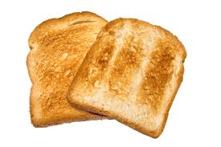

Toast of Toasts

When you don't really want just bread anymore, try this recipe to turn bread into something completely different!
Ingredients
- Some money
- 2 slices of bread
- 2 tbs of butter
Directions
- Go to the store and buy a device called a toaster. You can find them for relatively cheap and don't need an expensive kind for this recipe!
- Unbox and plug in your toaster.
- Put the 2 slices of bread into the toaster and use it (Read the directions for your toaster as needed)
- Once the toaster is done, add 1 tbs of butter to each piece of toast and smear it around to cover the toast from end to end.
- Enjoy!